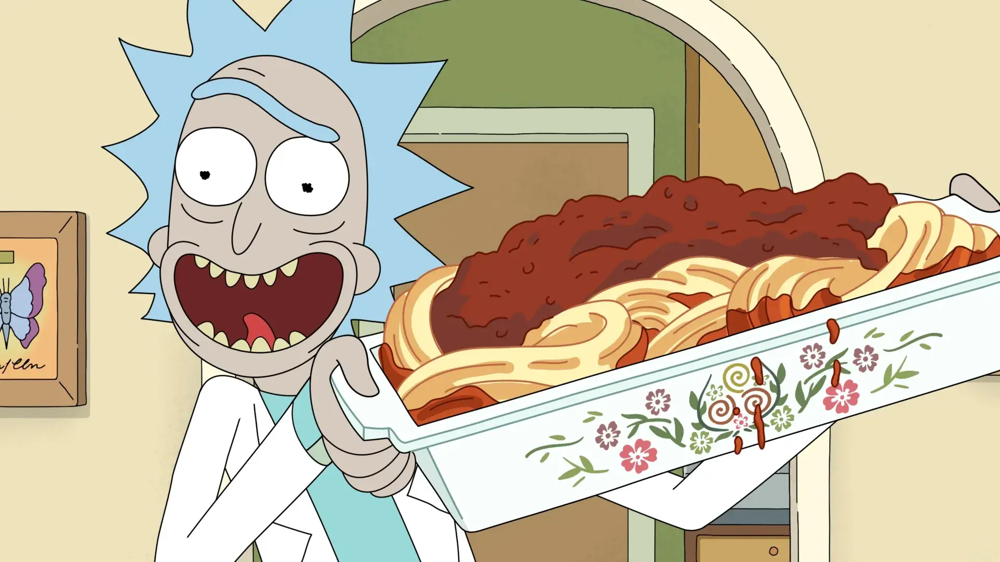

EXPLORAR TEMPORADAS
Rick reúne antigos aliados para ajudar Mr. Poopybutthole a superar uma fase difícil, transformando uma simples reunião entre amigos em uma noite totalmente fora de controle.
Um experimento dá errado e mistura as mentes de Rick e Jerry, criando uma personalidade imprevisível que ameaça destruir a estabilidade da família.
Unity retorna com planos ambiciosos para a humanidade, enquanto o Presidente tenta equilibrar política global e sentimentos pessoais inesperados.
Morty descobre a verdade perturbadora por trás do famoso espaguete de Rick e começa a questionar até onde vale a pena ir em busca do prazer perfeito.
Rick une forças com Evil Morty em uma missão decisiva contra Rick Prime, levando a série a um confronto cheio de revelações e consequências permanentes.
Após revisar gastos de aventuras, Rick e Morty são forçados a reviver momentos absurdos do passado diante de misteriosos observadores cósmicos.
Summer assume o controle de uma aventura alienígena enquanto Morty acaba ligado a ela de uma maneira bizarra que testa os limites da confiança entre irmãos.
Uma ameaça matemática invade a realidade e apenas personagens improváveis conseguem impedir que números conscientes dominem o universo.
Rick tenta manipular o próprio destino entrando em Valhalla, mas uma conspiração divina transforma a jornada em uma guerra absurda entre mitologia e ciência.
Rick e Morty entram em um buraco que materializa medos profundos, obrigando ambos a confrontar perdas pessoais e emoções que sempre tentaram evitar.